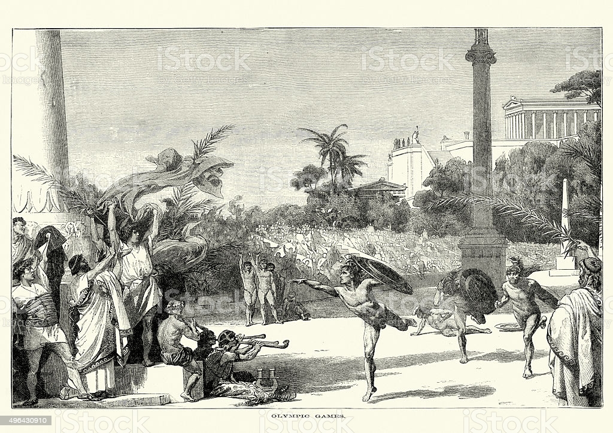

L'histoire des Jeux remonte à l'Antiquité et prend ses racines en Grèce dans le Péloponnèse, il y a environ 3000 ans. Des concours sportifs organisés à Olympie avaient lieu tous les quatre ans et ont pris le nom de Jeux Olympiques. On ne sait pas précisément quand ils ont commencé, mais la date de 776 av. J.-C. est souvent citée dans les sources écrites. Les raisons exactes de la naissance des Jeux restent aujourd'hui inconnues car l'histoire se mêle à la mythologie. La période de quatre années séparant les éditions de ces Jeux Antiques était nommée "Olympiade" et servait à l'époque de système de datation: le temps ne se comptait pas en années, mais en Olympiades. En 1894, Pierre de Coubertin lance son projet de rénovation des Jeux Olympiques et en 1896 a lieu la célébration des 1ers Jeux de l'ère moderne, à Athènes.
vidéo sur l'histoire des jeux olympiques.